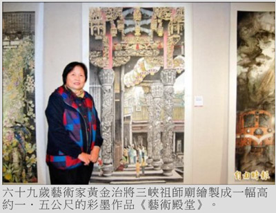

彩墨師黃金治 手繪三峽祖師廟
張安蕎｜自由時報／大台北都會生活｜2016年1月10日
紀念李梅樹修築廟宇精神
三峽祖師廟素有「東方藝術殿堂」之稱，吸引眾多遊客朝聖，一探傳統寺廟之美，六十九歲彩墨師黃金治為了感念藝術家李梅樹修築祖師廟的精神，特別將廟堂繪製成一幅高約一．五公尺的彩墨作品《藝術殿堂》，即日起至本月底止在土城藝文館展出。
立體浮雕、龍柱栩栩如生
《藝術殿堂》以站在中殿旁側的視角，描繪信眾虔誠參拜的景象，並將前殿的屋頂剪黏移置在畫中後側，讓畫面更添富麗，祖師廟的立體浮雕、龍柱栩栩如生，金碧輝煌，相當精美。
感念父親求平安符病好轉
「祖師廟真的太美了！」黃金治說，除了紀念李梅樹，也因篤信清水祖師的父親，在求得平安符後病痛奇蹟好轉，讓她深為感念，費時約一個月繪製此畫。
黃金治近年也走遍全台各地，將式微的傳統產業以彩墨留下紀錄，包括鹿港燈藝、石碇曬麵線、美濃紙傘等，以圖畫完整呈現其製作過程、工藝之美及人們的辛勞，畫面安排相當巧妙。
相關作品另於土城金城藝廊展至本月廿九日，其中一幅雪霸國家公園管理處的全景圖，特別以少見的俯瞰角度，呈現園區建物及遊客如織的景象，高山及森林反成配角，獲管理處青睞，選為明信片、說明書的封面。